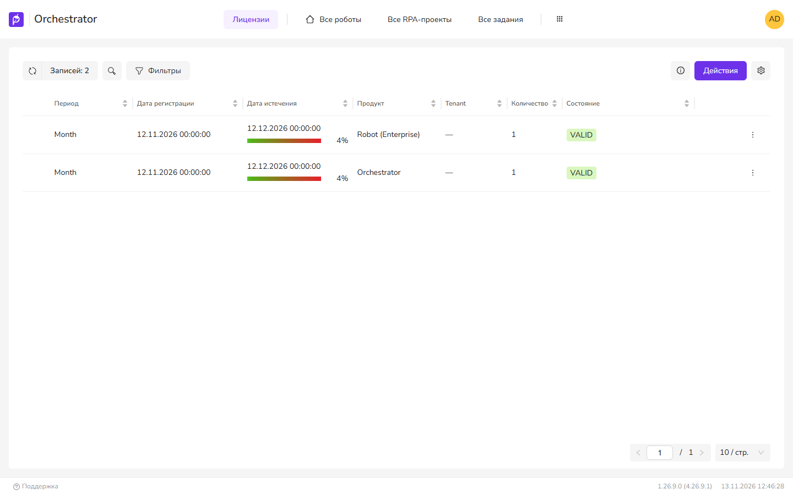

Нет валидной лицензии или робот не получает лицензию
На странице описаны три разные проблемы: лицензия Оркестратора, лицензии роботов и лицензии Студии. Сначала определите по таблице симптомов, какая из них возникла.
Лицензия Оркестратора привязана к оборудованию сервера (в Docker — к ключу primo-machine-key из compose-файла) и проверяется каждые 15 секунд. Лицензии роботов выдаются роботу на время запуска, лицензии Студии — на время работы Студии.
Симптомы
| Что видно | Где решение |
|---|---|
| UI4 и API отвечают «Отсутствует валидная лицензия на оркестратор.» (HTTP 402). В журнале WebApi — «Метод API недоступен - отсутствует валидная лицензия на оркестратор.» | Лицензия Оркестратора |
| Лицензия стала недействительной после замены процессора или переноса ВМ | Лицензия Оркестратора: как исправить — запрос на замену лицензии |
| Лицензия стала недействительной после обновления Оркестратора | Лицензия Оркестратора: как исправить — ограничение бессрочной лицензии по версии |
| В журнале WebApi «Сервис параметров оборудования для лицензий скомпрометирован» или «Ошибка запроса в сервис параметров оборудования для лицензий» | Лицензия Оркестратора: что проверить, шаг 3 |
Linux: в запросе на лицензию пустой серийный номер диска или идентификатор процессора 000000000000 | Лицензия Оркестратора: что проверить, шаг 5 |
| Робот не запускается или завершается с ошибкой «Отсутствуют свободные лицензии.» (HTTP 409) | Робот не получает лицензию |
| Студия не получает лицензию: «Отсутствуют свободные лицензии Студии.» (HTTP 409) | Студия не получает лицензию |
Лицензия Оркестратора
Вероятные причины
- Изменился отпечаток оборудования. Сравниваются три значения: идентификатор процессора, серийный номер диска и имя (на Windows — учётная запись службы MachineInfo, на Linux — имя хоста).
- В Docker изменён ключ
primo-machine-keyили соль шифрованияPRIMOSALTв compose-файле. В журнале WebApi при этом «CpuID не совпадают». Верните прежние значения и пересоздайте службы командойsudo docker compose up -d— лицензии снова станут действительными. - Служба MachineInfo недоступна или часы на её сервере и сервере WebApi расходятся.
- Linux: MachineInfo не получает серийный номер диска (для устройства из
Devices:HDDнет серийного номера) или серийный номер процессора (не установлена утилитаcpuid). - Истёк срок лицензии.
- Обновление на версию, которую бессрочная лицензия уже не покрывает.
- Системное время на сервере переведено назад.
Что проверить
- Откройте Лицензии. Проверьте Состояние, Дата истечения. Есть лицензия Оркестратора в состоянии VALID
- В журнале WebApi найдите причину: «CpuID не совпадают: …», «HddID не совпадают…», «UserName не совпадают…», «Подписи не совпадают», «Ошибка при проверке лицензии LicenseID=…». Установлено, какое значение не совпало
- Если задан
License:MachineInfoUrlилиLicense:MachineInfoUrls, проверьте, что MachineInfo отвечает с сервера WebApi и часы на обоих серверах совпадают. Ошибки: «Таймаут … при обращении к MachineInfo…», «Сервис параметров оборудования для лицензий скомпрометирован». Таких строк нетЧто означают ошибки обращения к MachineInfo
Ошибки идут цепочкой. Сначала записывается первопричина (уровень Error):
- «Таймаут … при обращении к MachineInfo с url=… истек.» — MachineInfo не ответил за
License:Timeout; - «Ошибка при обращении к MachineInfo …StatusCode:…» — MachineInfo ответил кодом, отличным от 200;
- «Ошибка при обращении к MachineInfo с url=….» с исключением — адрес недоступен (служба остановлена, сетевой экран) или ответ не прошёл проверку подписи: исключение «Сервис параметров оборудования для лицензий скомпрометирован».
Затем при одном адресе
License:MachineInfoUrlследует «Ошибка при проверке лицензии LicenseID=…» с исключением «Ошибка запроса в сервис параметров оборудования для лицензий». При спискеLicense:MachineInfoUrlsисключение «Ошибка запроса в сервисы кластера параметров оборудования для лицензий» возникает, только если не ответил ни один узел. Поэтому «Ошибка запроса в сервис…» сама по себе не означает, что служба остановлена: причину показывает предыдущая строка журнала.Подпись: MachineInfo подписывает идентификатор процессора, серийный номер диска, имя и своё локальное время с точностью до минуты. WebApi проверяет подпись по своему локальному времени и при несовпадении повторяет проверку через 2 с. «Скомпрометирован» записывается, если локальное время серверов MachineInfo и WebApi различается больше чем на минуту (в том числе из-за разных часовых поясов) или если по адресу отвечает служба, подпись которой не совпадает.
- «Таймаут … при обращении к MachineInfo с url=… истек.» — MachineInfo не ответил за
- Если в журнале «Проверка системного времени скомпрометирована или системное время переведено назад.», все лицензии считаются недействительными. Исправьте время на сервере.
- Linux: если в запросе на лицензию пустой серийный номер диска или процессор
000000000000, проверьте на сервере MachineInfo команды, которыми служба собирает параметры:
Серийный номер диска берётся командойlsblk --nodeps -no name,serial cpuid | grep 'processor serial number'lsblk --nodeps -no serialдля устройства из параметраDevices:HDDв конфигурации MachineInfo. Если для этого устройстваlsblkне выводит серийный номер, укажите вDevices:HDDдиск, для которого номер выводится. Еслиcpuidне установлен или не выводит серийный номер, служба возвращает000000000000. Значения кэшируются в памяти MachineInfo: после изменения перезапустите службу и сформируйте запрос заново. Обе команды выводят непустые значения

Как исправить
Если изменилось оборудование, сформируйте Запрос на замену лицензии и отправьте его поставщику. После загрузки новой лицензии нажмите Активировать.
Если источник отпечатка — MachineInfo (License:MachineInfoUrl), запрос проходит за License:Timeout (по умолчанию 4 с). Для нескольких узлов WebApi адреса MachineInfo перечисляются в License:MachineInfoUrls, порядок важен. Лицензия действительна, если совпал хотя бы один узел. Запрос на лицензию не создаётся, если недоступен любой узел: «Не все узлы кластера доступны. Создание запроса на лицензию не возможно.»
Бессрочная лицензия Оркестратора в первый год с даты начала действует для любой версии. Позже — только для версий, выпущенных в течение года с даты начала. Дата версии вычисляется по номеру: 1.26.9 → 1 сентября 2026. Поэтому лицензия может стать недействительной сразу после обновления. Ограничение по версии проверяется только для бессрочной лицензии Оркестратора: на лицензии роботов и Студии оно не распространяется. Перед обновлением сверьте лицензию, см. Перед обновлением: лицензия и бэкап.
Робот не получает лицензию
| Ответ или запись | Что значит |
|---|---|
| 409 «Отсутствуют свободные лицензии.» | Все лицензии роботов заняты |
| 409 «Превышена квота на лицензии.» | Исчерпана квота пользователя робота |
| 402 «Уже запущено максимальное количество роботов в рамках лицензии …» | Число одновременно работающих роботов достигло лимита лицензии |
| 500, в журнале «Не удалось проверить наличие свободных лицензий Робота.» | Внутренняя ошибка, проверьте исключение в соседних записях журнала |
- Проверьте, не заняты ли лицензии роботами, которые уже не работают. Лицензия освобождается при остановке робота или если он не присылает keepalive дольше
RobotStart:IntervalForReleaseInSeconds(в классе 300 с, в Dockerfile 120 с). Число занятых лицензий совпадает с числом работающих роботов - После добавления лицензии подождите: общее число лицензий кэшируется на
Cache:License:DurationInMinutes(5 мин). Новые лицензии учитываются, проекты уходят из очереди - Если лицензия у работающего робота освобождается по таймауту, проверьте, доходят ли до WebApi сигналы робота
PUT /api/Licenses/KeepAliveRobot. Ключ робота передаётся в заголовкеrobotKey; чтобы видеть его в журнале доступа nginx, добавьте в формат журнала переменную$http_robotkey. Для робота с событием таймаута в журнале nginx видны регулярные запросы KeepAliveRobot без пропусков дольшеRobotStart:IntervalForReleaseInSeconds
Освобождение по таймауту отмечается событием «Лицензия робота освобождена по таймауту». Истечение срока отслеживает служба States: уведомление «Срок действия лицензии истекает» за LicenseExpired:DaysStartBefore (15) дней.
Студия не получает лицензию
| Ответ или запись | Что значит |
|---|---|
| 409 «Отсутствуют свободные лицензии Студии.» | Число занятых лицензий Студии в тенанте пользователя равно сумме действующих лицензий Студии этого тенанта |
| 409 «Не пройдена проверка через Ч-Б список адресов для Студии.» | Адрес машины Студии не прошёл проверку по списку разрешённых и запрещённых адресов тенанта |
Предупреждение «Отсутствует информация о Студии.» на запросах KeepAliveStudio | Студия работает, а её лицензия в Оркестраторе уже освобождена, например по таймауту. Выдаче лицензий другим Студиям запись не мешает |
Предупреждение «Не удалось извлечь заголовок [X-Real-IP] из запроса. Используем для определения IP-адреса клиента метод GetCurrentUserIP()=[…].» от KeepAliveStudio | Служебная запись: она пишется при каждом сигнале Студии, даже если заголовок передан. На выдачу лицензий не влияет |
- Проверьте роли учётной записи пользователя. Если ей одновременно назначены роль Студии и роль Citizen, Студия может получить «Отсутствуют свободные лицензии Студии.» при свободных лицензиях: занятая лицензия отображается на пару минут и освобождается. Оставьте у учётной записи одну из этих ролей. Студия получает лицензию, в журнале WebApi «Студия с key=…, ip=… взяла свободную лицензию.»
- Если Студию закрыли аварийно, подождите. Лицензия Студии освобождается, если Студия не присылает сигнал
PUT /api/Licenses/{key}/KeepAliveStudioдольшеStudio:IntervalForReleaseInSeconds(120 с); проверка выполняется каждые 15 с. В журнале событий «Лицензия студии освобождена по таймауту»